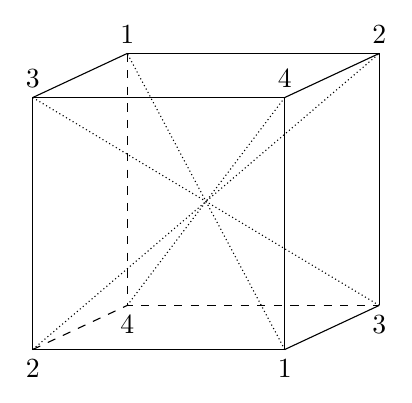

How these work. Each walk-through takes one exercise through Pólya’s four phases. You answer one step at a time and get feedback right away; when something isn’t right, read why and try again. Hints are there when you ask for them. Your place is saved in this browser, so you can stop and come back.
The walk-throughs end in full solutions, so the work you present in class should still be your own, in your own words.
Goal: Find the inverse of an \(n\)-cycle for every \(n\), and say why it works. It uses the cycle notation of Section 5.1 and the idea of an inverse from Chapter 3. The same idea finds the inverse of any permutation written in disjoint cycles, as the last step shows.
Goal: Find the largest order of an element of \(S_n\), and say why no element is bigger. It uses the order of an element from Chapter 4 and the cycle notation of Section 5.1. The fact that the order of a product of disjoint cycles is a least common multiple is the idea behind Judson’s Exercise 5.4.13.
Goal: List the cycle structures of the even permutations in \(A_5\) and \(A_6\), and say how you know nothing is missing. It uses the even and odd permutations of Section 5.1 and the fact that a cycle is a product of transpositions. The counts at the end agree with Proposition 5.1.17, which says \(A_n\) is half of \(S_n\).

Goal: Say which motion of the cube a permutation of its diagonals describes, and classify the turns by how they move the diagonals. It uses the cycle notation and the product convention of Section 5.1 on a new kind of example. Tomorrow’s reading (Section 5.2) takes up the motions of the cube as a group.